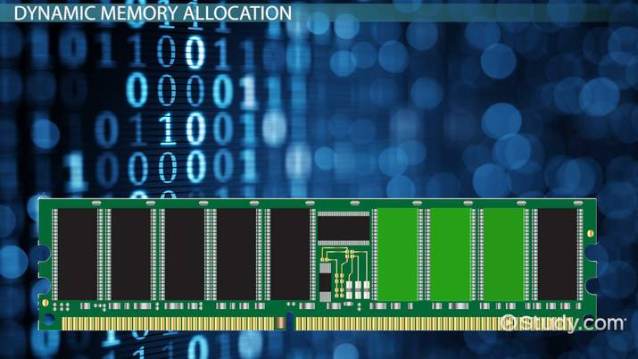

In C, functions such as malloc() and free() in the LibC library allow the user to allocate and free memory. Given a requested amount of memory, I implemented functions that allow internal heap memory to be manually allocated and freed along with the ability to perform garbage collection using bit manipulations and arithmetic calculations. Additionally, a coalescing function was incorporated into the free function in order to solve external fragmentation issues when freeing.
If you would like to see the codes, written in C, send me an email at junhyungso5551@gmail.com and I will be glad to share with you!